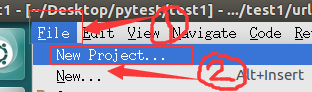
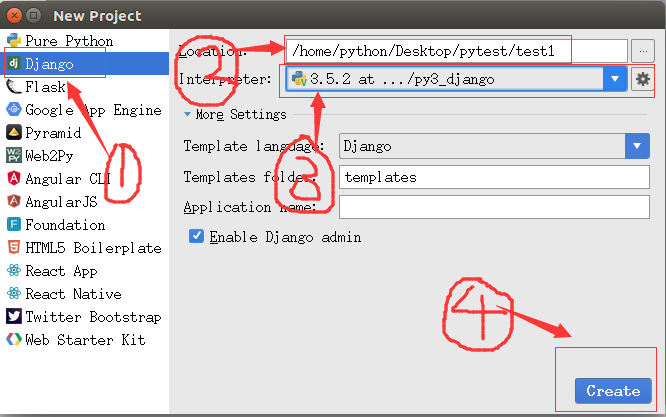
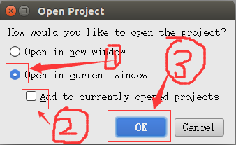
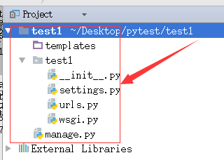
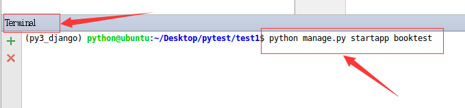
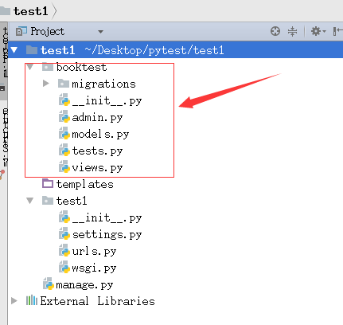
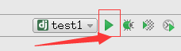
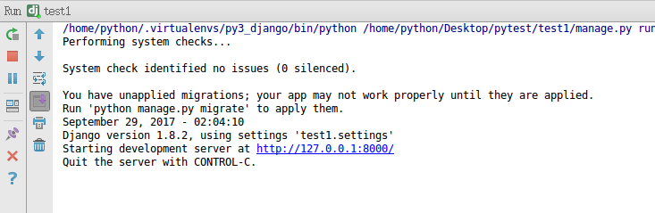

创建图书管理项目
- 在django中，项目的组织结构为一个项目包含多个应用，一个应用对应一个业务模块
- 示例：创建项目的名称为test1，完成“图书-英雄”信息的维护，创建应用名称为booktest
创建项目
- 在当前用户的某个目录下创建项目，这样不会发生权限问题
- 示例中在桌面上创建了pytest目录，今后的项目都会创建在这个目录下
cd /home/Desktop/
mkdir pytest
- 打开pycharm，点击File->New Project菜单：

- 点击菜单后出现如下窗口：

- 点击create后出现如下窗口

- 点击ok后创建项目成功
项目默认目录说明
- 默认目录结构如下图：

- manage.py是项目运行的入口，指定配置文件路径
- 与项目同名的目录，此处为test1，包含项目的配置文件
- init.py是一个空文件，作用是这个目录test1可以被当作包使用
- settings.py是项目的整体配置文件
- urls.py是项目的URL配置文件
- wsgi.py是项目与WSGI兼容的Web服务器入口，详细内容会在part6的布署中讲到
创建应用
- 使用一个应用开发一个业务模块，此处创建应用名称为booktest，完成图书英雄的信息维护
- 打开Terminal窗口，执行如下命令创建应用的命令如下：
python manage.py startapp 应用名称
例：
python manage.py startapp booktest

- 创建应用后，项目目录结构如下

- init.py是一个空文件，表示当前目录booktest可以当作一个python包使用
- tests.py文件用于开发测试用例，在实际开发中会有专门的测试人员，这个事情不需要我们来做
- 其它文件和目录会在稍后的开发中使用到，会逐个讲解
安装应用
- 应用创建成功后，需要安装才可以使用
- 在test1/settings.py中INSTALLED_APPS下添加应用的名称就可以完成安装
- 初始项目的INSTALLED_APPS如下图：

- 在元组中添加一个新的项，当前示例为booktest
'bootest',

运行
- 在开发阶段，为了能够快速预览到开发的效果，django提供了一个纯python编写的轻量级web服务器，仅在开发阶段使用
- 可以在Terminal运行如下命令启动服务器：
python manage.py runserver ip:port
例：
python manage.py runserver
- 参数ip、port可以省略不写
- 默认ip为127.0.0.1
- 默认端口为8000
- 在pycharm中启动服务器按钮如下图：

- 窗口run会被打开，如下图：

- 在浏览器中输入网址“127.0.0.1:8000”，网站效果如下图

- 如果增加、修改、删除python文件，服务器会自动重启
- 如果想关闭服务器可以使用ctrl+c或点击run窗口的红色方块按钮